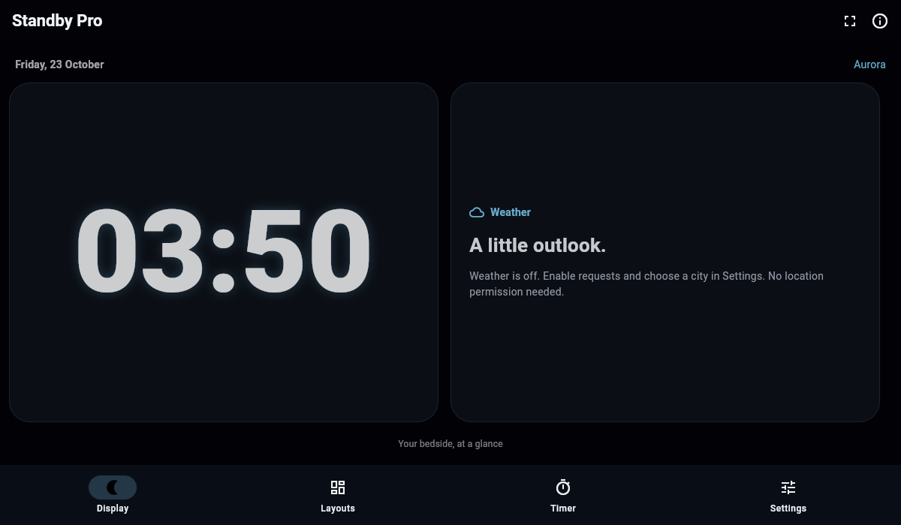

A useful second glance
Duo puts two widgets together. Optional weather supports London, New York, Tokyo and Sydney, with the source, refresh state and timestamp visible.
Open-source bedside display · 1.1 preview
Give your clock room to breathe. Choose a face, set the colour, and leave the day's noise outside the display.
Flutter source and browser preview. Android/iPhone production binaries and physical device acceptance are still open.

Make it yours
Digital, Analog, Flip or Text. Keep the original Aurora, Night Red, Solar and Matrix themes, then choose what sits beside the time.
Explore setup and display controls →Duo puts two widgets together. Optional weather supports London, New York, Tokyo and Sydney, with the source, refresh state and timestamp visible.
App-local dimming, scheduled night tint and optional pixel shifting. Quiet display hides navigation; its visible exit restores controls.
Start a 5, 15, 25 or 45 minute visual timer. Pause or reset without an account. This is a foreground timer, without alarm or notification guarantees.
Straightforward by design
Weather is off until you enable it. Calendar events are labelled examples. Audio metadata is unavailable. The local clock comes from your device.
Standby Pro is a display while the app is open. Android can request that its visible window stays on. iOS has no native display-control bridge in this preview. This app does not replace Apple’s system StandBy or provide lock-screen integration.
Pixel shifting is a mitigation, not a burn-in or battery-life guarantee. Read platform and test limits.
Questions, answered
You can build the Flutter source with the appropriate SDKs. This release provides source and a browser-preview archive, not a production signed APK or IPA. Physical device, signing, battery and accessibility acceptance remain open.
No. Calendar cards show labelled sample events and audio metadata is unavailable. Weather uses your selected public city, not GPS. The improved app declares no calendar, location, photo or notification permission.
Open-Meteo. Requests are optional and expose IP and selected city coordinates to the provider. Data attribution is CC BY 4.0. The free endpoint is for noncommercial use. Conditions refresh on request and show their last update time.
Standby Pro by Ghostzy0 is an independent open-source Flutter project. It has original code, layouts and clock themes and is not affiliated with Apple or third-party StandBy apps. Historical reference captures are excluded from current distribution.
The existing repository and its history remain intact. The exact historical baseline tag preserves the current source before improvements. A separate clean baseline repository pins all original app files with SHA256 provenance. No third-party replica fidelity is claimed.
Build in the open
Read the source, reproduce the checks, or help close a real device-validation gap.